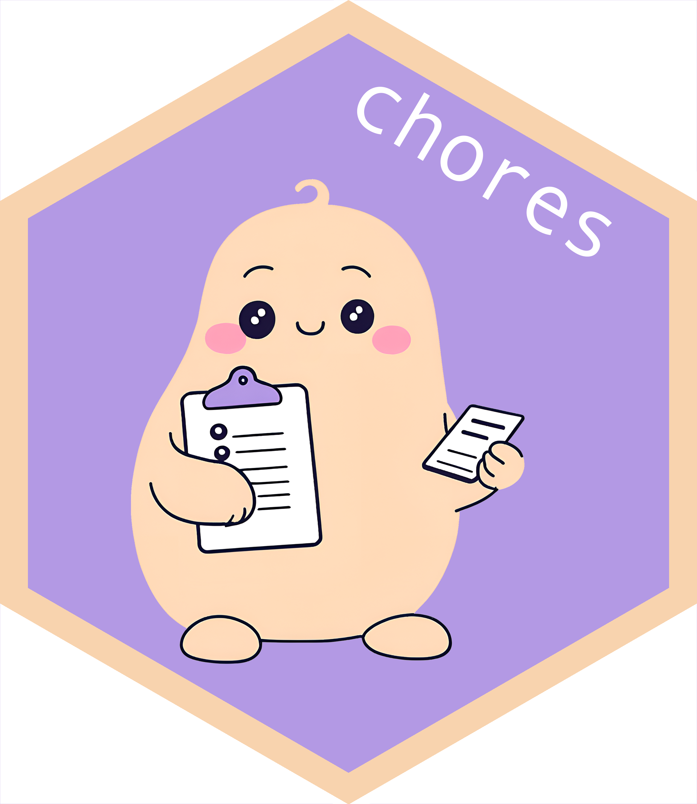

AI Demos, May 2025
Source code and slides for my slot in the Posit AI demos session.
A Simon-centric overview of R + LLMs
I wanted to leave some notes here to give a 30,000-foot perspective on some of the projects at the intersection of R + LLMs I’m spending time with. ellmer is at the core of all of them.
In “production”
First, projects that are on CRAN and/or have entries on the Posit Blog:
| Package | Gist | Status | Learn More | In Python |
|---|---|---|---|---|
|  | Automate repetitive R coding tasks | On CRAN since early 2025 | “Introducing chores” on the Posit Blog | “Slash Commands” from the Continue plugin are mostly the same thing |
 |
Inline edits / autocomplete that knows about R objects | On CRAN since early 2025 | “Introducing gander” on the Posit Blog | Can’t name any, but I can only assume there are a good few. |
Both of the above are tools to assist data scientists in writing R code. They work in both RStudio and Positron. The Positron Assistant now implements the ideas behind gander (and chores?) and much more, with a much more pleasant UX. chores and gander are configured to “just work” in the Snowflake Native App.
I’ve been surprised by the enthusiasm + uptake on these packages!
Almost there
A few things that have been in the works for a couple months and will be ready before conf:
| Package | Gist | Status | h.t. | Learn More | In Python |
|---|---|---|---|---|---|
 |
LLM evaluation / benchmarking in R Especially relevant for customer adoption of ellmer. |
Not yet on CRAN (a couple weeks?), been sharing publicly for a while. Slotted for a talk on this package at conf. |
JJ Allaire, who wrote the Python library that inspired the package Sara Altman, for an upcoming Posit Blog post citing the package |
A series of blog posts where I evaluate models on R coding performance | vitals is a port of the widely adopted Inspect framework |
 |
Describing R stuff to LLMs Not very glamorous, but a huge QOL improvement for R users using LLMs a lot. |
Not yet on CRAN, just started sharing publicly. | This package is mostly written by Garrick Aden-Buie | Posit Blog post “Teaching chat apps about R packages” | Leans pretty heavily on R’s somewhat unique documentation system. llm-docs.com has a model-in-the-middle approach to the same problem. |
 |
Model Context Protocol for R Integrates R with many popular tools: Claude Desktop, Claude Code, Copilot in VS Code FYI: MCP is quite hot right now. |
Not yet on CRAN but just started sharing publicly. Still a good bit of work to do before it’s CRAN-ready. |
Charlie Gao and Winston Chang | Package website | Natively supported with an official SDK. |
In the future
I’d like to spend more time with these things once the above packages are CRAN-ready:
What if databot was for predictive modeling?
- Two challenges here that aren’t relevant for databot: models don’t “know” tidymodels like they know tidyverse, and modeling code takes much longer to run than EDA code.
A chores eval, measuring how well different models could power the chores package.
- I’m particularly interested in identifying cheap / free models that folks could use—I think the hesitancy to fill in CC info is a greater barrier to adoption than I’d anticipated.
In the past
A few things that I’ve experimented with and decided not to pursue further:
A ggplot2 assistant (plop): I prefer using gander more for this use case. (Let me do the fun parts!)
Automated unit testing (ensure): Required some changes to Positron to get it working there, and sounds like it may be redundant with upcoming Positron features. Works fine in RStudio.
A debugging assistant (buggy): Sounds like this may be redundant with upcoming Positron features.